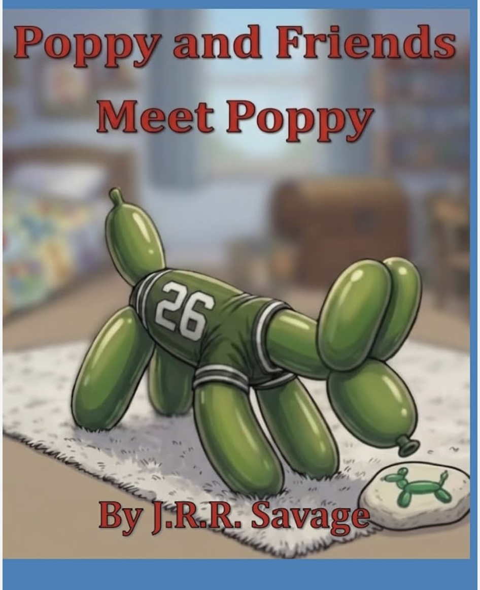

The Pink‑Powered Creative Force Behind Meadow Muffin Enterprises
J.R.R. Savage is an emerging author whose goal is to empower children with the tools they need to succeed in life through teaching social and emotional learning and life skills. She has years of experience helping children of all ages and ability levels through ministry, caregiving, classroom assistance, and community volunteering. She holds a B.S. in Psychology from Truett McConnell University and is a driven wife, sister, and friend who loves giving back to her community.

This book introduces Poppy, the balloon animal dog, and some of his friends. This book is a part of a children's series called "Poppy and Friends." The story has a clear message about the importance of teamwork and friendship. The book also shows how diversity can lead to new ways to solve a problem. In this story, Poppy has lost his pet rock. Poppy goes around the Meadow Muffin Homestead and asks his friends for help. Each friend has a unique way of trying to solve the problem. At the end of the story, the pet rock is found using teamwork.
Buy the Book